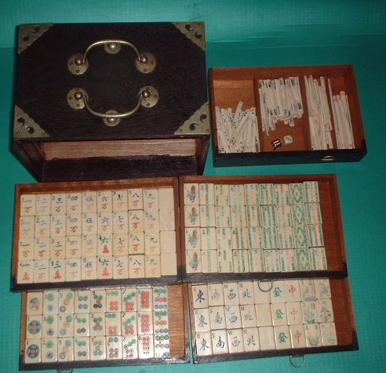
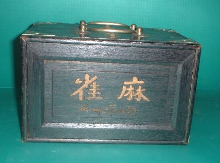
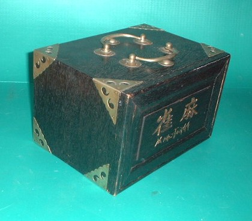
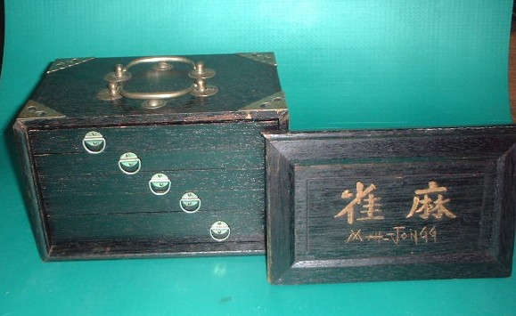

Tile colection 珍奇牌。
（1６）バブコック 後期タイプ牌
1920年代、アメリカで麻雀ブームが巻き起こった。この火付け役となったのが、ジョセフ・Ｐ・バブコックというアメリカ人。アメリカの石油会社の社員として上海に赴任し、そこで麻雀を覚えた。
アメリカ本国でも麻雀が流行しつつあったので、麻雀セットの輸出入をすることにした。牌を売るためには、ルールも知ってもらわなければならない。そこでルールブックを著し、牌セットに付録としてつけた。このルールブックは、表紙が赤いためレッドブックと呼ばれ、牌セットとともに非常によ売れた。そして、ここに記されたルールは、上海の英米租界でも標準ルールとされた。
上海近辺で作らせた麻雀牌はアメリカへどんどん運ばれた。道具が供給されるようになったので、アメリカでの普及に拍車がかかり、大麻雀ブームとなった。
このバブコックが作らせた麻雀牌は、いくつか特徴がある。それは
（１）１筒に「自由麻雀」という文字が刻印されている。
（２）８筒は全部が赤色。
（３）萬子は略万。
（４）索子は棒状タイプ。
（５）数牌、インデックス入り。
等々である。
そして今回紹介したのは、そのバブコック牌の後期タイプ。
（１）１筒の図柄は、「自由麻雀」という文字が刻印されていない他は、そのまんまバブコック。
（２）８筒が赤色。
８筒が赤色なのは、筒子の模様がサイコロの目に由来することを示している。現在のサイコロは１の目だけが赤色であるが、中国の古いサイコロは４も赤色である。６筒はその４と２の組み合わせであるから、４の方が赤色で２は黒色となっている。６筒の丸が４と２に分離しているのは、この為だ。７筒は４と３の組み合わせだから４が赤。３が斜めになっているのも、サイコロの目が斜めだからである。８筒は４二つなので、全部赤色となるわけである。ただし「８筒はすべて赤色」というわけではない。麻雀博物館に収蔵されているバブコック牌の中には、青色８筒、黒色８筒も存在する。これはバブコック牌の製造時期（初期か後期か）や製造職人によって異なったと思われる。
（３）萬子は略万。
（４）索子は棒状タイプ。
（５）数牌、インデックス入り。
数牌にインデックスを入れたのは、バブコックの創案と言われている。
この牌はこれらの特徴をすべて備えている。これがバブコック後期タイプ牌というのは、まず３筒、７筒が逆流れになっているため。３筒、７筒が逆流れなのはインデックスを入れやすくする為であるが、初期のバブコック牌はそこまで考えが至らず、本来の紋様のところに、そのままインデックスを入れた。そこで初期のバブコック牌の３筒、７筒はそのまま順流れになっている。
１筒の図柄はバブコック紋そのままであるが、「自由麻雀」の文字が刻印されていない。これは生産性をあげるため、刻印を省略したものである。
いずれにしても、この２点が初期のバブコック牌と異なるが、その他のオリジナリティの特徴から、バブコック牌の後期タイプと類推される。
もう一つ、バブコック牌の特徴を示しているのが、この外箱。
ちょっと写真ではわかりにくいかもしれないが、正面の落としぶたに「MAH-JONGG」と刻印されている。これはもちろんマージャンの音写であり、現在では、このMAH-JONGG（あるいはMAHJONG）は、単なる「麻雀」の英語表記としての意味でしかない。
しかし実はこれはバブコックの登録商標である。いちはやくバブコックが、このMAH-JONGGという表記を登録してしまった。そのためライバル業者は、このう表記を使用できなかった。そこで他の同業者は「Mahchow（マーチョー）」とか、「Pon Chow（ポンチョー＝ポンチーのこと）」などの名称を使っていた。しかしPon ChowやMahchowではインパクトが弱く、やはりずばりMAHJONGGと表記したバブコック牌が圧倒的なシェアを占めていた。
＃それにしても、Mahchowなんて表記は、まるで友人が香港でつかまされたROULEX時計やSOＭYのウオークマンみたいだな。（笑）
箱は唐木（からき）ではなく軟材であるが、オリジナルのままで、しっかりしている。「MAHJONGG」の刻印もあり、資料的にはこの箱だけでもかなり価値がある。しかし残念ながら牌が何枚か欠落していて、骨董的価値は低い。
